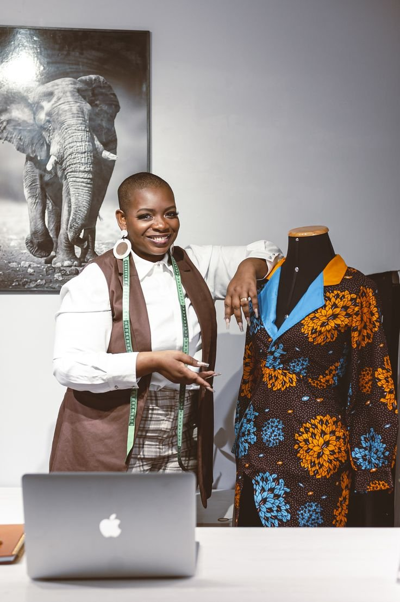
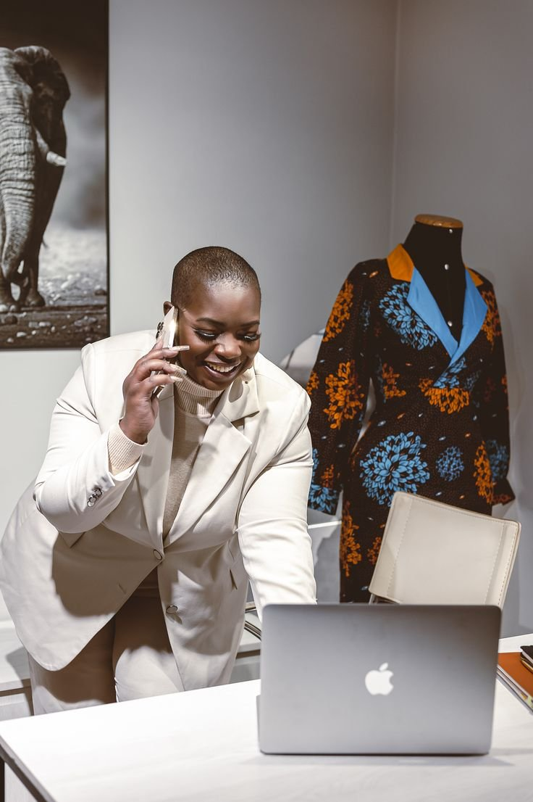
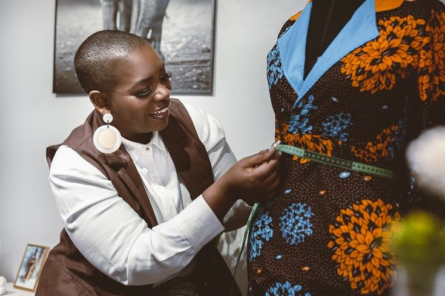
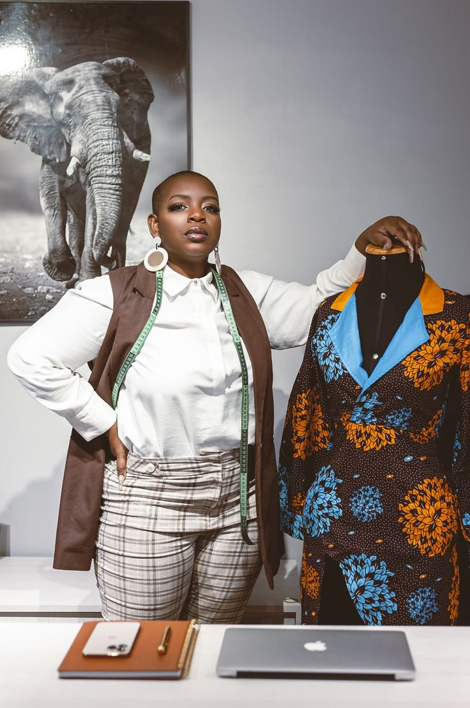
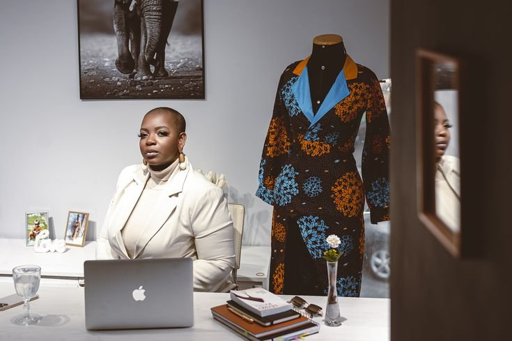
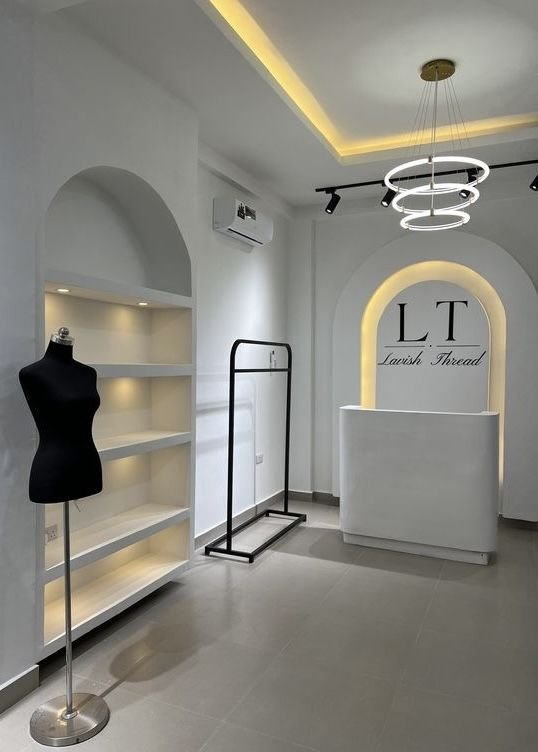
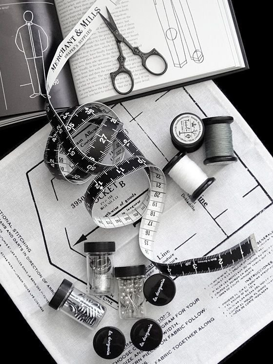

Estilista — O poder feminino.

Cada terno começa com uma medida, um tecido e uma mulher. No atelier, o corte é pensado para o corpo, para o dia e para a presença de quem o veste.
Prova, ajuste e acabamento. O trabalho é feito com calma, peça a peça, para que o terno assente bem e dure.


Medir, cortar, provar, ajustar. O detalhe está no ombro, na cintura e no caimento da calça.
Do trabalho à ocasião especial, o mesmo rigor: um terno que acompanha a mulher, sem a apertar.


Um terno bem feito não disfarça. Dá presença. É essa a assinatura FEM TERNO.
Castanho, creme, rosa, bordô, azul, branco e preto. Cada cor, um carácter. Cada tecido, um caimento.
Atelier FEM TERNO, em Maputo, num bairro sofisticado.
Avenida Julius Nyerere, Polana — Maputo

